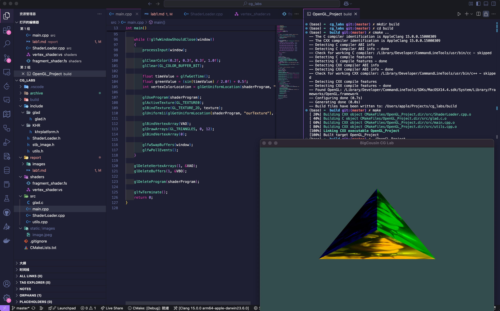

CG Lab1
姓名：刘尚
学号：202211010058
实验源代码仓库：GitHub 仓库
环境配置
系统环境
- MacOS
- 处理器架构：ARM64（Apple Silicon）
- 编译器: Clang（Apple Clang 15.0.0）
依赖库安装
在 macOS 上使用 Homebrew 安装 OpenGL 相关依赖库：
brew install cmake glew
glad 配置
下载 glad 源码，将 glad.h 放置在项目的 include/glad 目录下，将 glad.c 放置在项目的 src 目录下。
项目环境搭建（基于 Cmake）
CmakeLists.txt
cmake_minimum_required(VERSION 3.10)
project(OpenGL_Project)
set(CMAKE_CXX_STANDARD 17)
# 查找 OpenGL
find_package(OpenGL REQUIRED)
# 添加 glad、GLEW、GLFW 头文件路径
include_directories(${PROJECT_SOURCE_DIR}/include)
include_directories(${PROJECT_SOURCE_DIR}/include/glad)
include_directories(/opt/homebrew/include)
link_directories(/opt/homebrew/lib)
file(GLOB SOURCES ${PROJECT_SOURCE_DIR}/src/*.cpp ${PROJECT_SOURCE_DIR}/src/glad.c)
# 生成可执行文件
add_executable(OpenGL_Project ${SOURCES})
add_custom_command(TARGET OpenGL_Project POST_BUILD
COMMAND ${CMAKE_COMMAND} -E copy_directory
${PROJECT_SOURCE_DIR}/shaders $<TARGET_FILE_DIR:OpenGL_Project>/shaders
)
add_custom_command(TARGET OpenGL_Project POST_BUILD
COMMAND ${CMAKE_COMMAND} -E copy_directory
${PROJECT_SOURCE_DIR}/static $<TARGET_FILE_DIR:OpenGL_Project>/static
)
# 链接 OpenGL、GLEW、GLFW
target_link_libraries(OpenGL_Project OpenGL::GL GLEW glfw)
说明
shader/目录下通过文件单独编写着色器，在 Cmake 中添加了拷贝文件的命令，将着色器文件拷贝到可执行文件目录下。
同理，static/目录下存放纹理文件，也会被拷贝到可执行文件目录下。
Cmake 中添加了 GLFW 的链接，并且将 include 目录添加到头文件搜索路径中，可以实现在源文件中直接引用 GLFW 和 GLAD 的头文件。
编译 & 运行
在终端中执行：
mkdir build && cd build
cmake ..
make
./OpenGL_Project
任务实现
着色器加载器
之前提到，着色器文件通过 Cmake 拷贝到可执行文件目录下，现在实现了一个着色器加载器，用于加载着色器文件。
类定义如下
class ShaderLoader
{
private:
static std::string readShaderFile(const std::string &filePath);
static void checkShaderCompilation(unsigned int shader, const std::string &type);
static void checkProgramLinking(unsigned int program);
public:
ShaderLoader();
~ShaderLoader();
static unsigned int loadVertexShader(const std::string &filePath);
static unsigned int loadFragmentShader(const std::string &filePath);
static unsigned int compileShader(unsigned int type, const std::string &source);
static unsigned int createShaderProgram(const std::string &vertexPath, const std::string &fragmentPath);
static void deleteShader(unsigned int shader);
static void deleteProgram(unsigned int program);
};
主要思路是通过 glCreateShader 创建着色器对象，通过 glShaderSource 和 glCompileShader 编译着色器，通过 glCreateProgram 创建着色器程序，通过 glAttachShader 和 glLinkProgram 链接着色器程序。
通过封装这些操作，可以方便地加载着色器文件，并且通过文件系统管理着色器文件。
类的实现可见代码仓库中的 src/ShaderLoader.cpp。
窗口初始化的封装
封装了一个 初始化窗口与 GLFW 的函数initWindow ，用于初始化 GLFW 窗口,简化了窗口初始化的过程。
下面是两个重载的函数声明：
GLFWwindow *initWindow(unsigned int width, unsigned int height)；
GLFWwindow *initWindow(unsigned int width, unsigned int height, std::string windowTitle)；
实现思路是通过 glfwInit 初始化 GLFW 库，通过 glfwWindowHint 设置窗口属性，通过 glfwCreateWindow 创建窗口。
同时，通过 glfwSetFramebufferSizeCallback 设置窗口大小回调函数，通过 glfwSetCursorPosCallback 设置鼠标移动回调函数，通过 glfwSetScrollCallback 设置鼠标滚轮回调函数。
函数的实现可见代码仓库中的 src/utils.cpp。
任务思路
接下来先观察每个任务的要求，分析实现思路，最后给出最终实现全部任务后的代码讲解。
-
任务 1:在 hello_triangle.cpp 的基础上，实现立方体的渲染（最小的立方体为正四面体，由四个顶点、四个三角形组成）
-
任务 2:在任务 1 的基础上，为不同三角形面设计不同的颜色，至少一个三角形的三个顶点颜
色不同 -
任务 3:在任务 2 的基础上，自选纹理图像，为立方体应用纹理
任务 1
先从简单的渲染一个三角形开始，根据 LearnOpenGL 的教程，我们需要定义一组顶点数据，然后通过顶点缓冲对象和顶点数组对象将数据传递给着色器。其实就是把数据传送给 GPU，然后再定义如何解析这些数据的过程。
如果要渲染一个立方体，我们需要定义 8 个顶点，然后通过 12 个三角形将这 8 个顶点连接起来。这里我们可以通过索引缓冲对象来减少重复的顶点数据。
任务 2
为每个面添加不同的颜色，根据 LearnOpenGL 的教程得知，片段着色器可以接受顶点着色器传递的颜色数据，然后将颜色数据传递给输出变量，最后将颜色数据传递给输出颜色，然后由 GPU 渲染出来。
所以我们现在需要改进原始的顶点和片段着色器，使得顶点着色器可以传递颜色数据给片段着色器，然后片段着色器根据颜色数据渲染出不同的颜色。
现在面临一个问题，之前使用 EBO 的方式绘制三角形，现在需要为每个顶点添加颜色数据，这样就不能使用 EBO 了，因为 EBO 是为了减少重复的顶点数据，而现在每个顶点在不同面上的颜色是不同的，如果仍然使用原本的方式会导致绘制颜色方案更加复杂，为了简化问题，我们可以不使用 EBO，直接使用 VBO 和 VAO。
同时在 cpp 代码中修改 VBO 和 VAO。修改顶点数据，为每个顶点再添加三个float数值表示颜色。然后修改 VAO 的绑定方式，使得顶点数据和颜色数据可以被正确解析。
任务 3
通过 LearnOpenGL 的教程，我们可以知道，纹理是一种特殊的 2D 图像，可以被映射到 3D 物体的表面上。我们需要定义纹理坐标，然后将纹理坐标传递给片段着色器，然后在片段着色器中根据纹理坐标获取纹理颜色。通过stb_image库可以实现加载纹理图片，然后将纹理数据传递给 GPU。
同样的，我们需要修改 cpp 代码，为每个顶点添加两个float数值表示纹理坐标。然后修改 VAO 的绑定方式，使得纹理坐标数据可以被正确解析。
代码实现
顶点着色器
#version 330 core
layout (location = 0) in vec3 aPos;
layout (location = 1) in vec3 aColor;
layout (location = 2) in vec2 aTexCoord;
flat out vec3 faceColor;
out vec2 texCoord;
void main() {
gl_Position = vec4(aPos, 1.0);
faceColor = aColor;
texCoord = aTexCoord;
}
顶点着色器接受三个输入变量，分别是顶点坐标、颜色和纹理坐标。然后将顶点坐标传递给输出变量，颜色和纹理坐标传递给片段着色器。
片段着色器
#version 330 core
out vec4 FragColor;
flat in vec3 faceColor;
in vec2 texCoord;
uniform sampler2D ourTexture;
void main() {
vec4 texColor = texture(ourTexture, texCoord);
FragColor = texColor * vec4(faceColor, 1.0);
}
片段着色器接受两个输入变量，分别是颜色和纹理坐标。然后根据纹理坐标获取纹理颜色，然后将纹理颜色和颜色相乘，得到最终的颜色。
纹理的材质通过uniform sampler2D ourTexture传递给片段着色器。
主流程代码
下面给出 cpp 代码的简化版本,完整可执行的代码见代码仓库中的archive/lab1.cpp。
整体思路，根据 OpenGL 的思想，我们需要先初始化窗口，然后加载着色器，加载纹理图片并且绑定好纹理对象，然后定义顶点数据，绑定好 VAO 和 VBO，然后在主渲染循环中绘制顶点数据。
所谓的渲染过程通过一个主渲染循环来实现，每次循环中都会调用glClear函数清空颜色缓冲区，然后调用glDrawArrays函数绘制顶点数据。
GFLW 窗口初始化已经封装在utils.cpp中，这里直接调用initWindow函数。
auto window = initWindow(SCR_WIDTH, SCR_HEIGHT, "BigCousin CG Lab");
然后在主渲染循环中有如下调用：
while (!glfwWindowShouldClose(window))
{
processInput(window);
}
下面定义顶点数据，前面提到由于我们要针对每个面进行颜色渲染而放弃了 EBO，所以只需定义一组顶点数据，这组顶点数据每个顶点都包括顶点坐标、颜色和纹理坐标。
float vertices[] = {
// 位置坐标 | 颜色 | 纹理坐标
0.0f, 0.5f, 0.0f, 1.0f, 0.0f, 0.0f, 0.5f, 0.0f, // 顶点 A
-0.5f, -0.35f, 0.0f, 1.0f, 0.0f, 0.0f, 0.0f, 1.0f, // 顶点 B
0.5f, -0.35f, 0.0f, 1.0f, 0.0f, 0.0f, 1.0f, 1.0f, // 顶点 C
0.0f, 0.5f, 0.0f, 0.0f, 1.0f, 0.0f, 0.5f, 0.0f, // 顶点 A
0.5f, -0.35f, 0.0f, 0.0f, 1.0f, 0.0f, 1.0f, 1.0f, // 顶点 C
0.0f, 0.0f, 0.5f, 0.0f, 1.0f, 0.0f, 0.5f, 1.0f, // 顶点 D
0.0f, 0.5f, 0.0f, 0.0f, 0.0f, 1.0f, 0.5f, 0.0f, // 顶点 A
0.0f, 0.0f, 0.5f, 0.0f, 0.0f, 1.0f, 0.5f, 1.0f, // 顶点 D
-0.5f, -0.35f, 0.0f, 0.0f, 0.0f, 1.0f, 0.0f, 1.0f, // 顶点 B
-0.5f, -0.35f, 0.0f, 1.0f, 1.0f, 0.0f, 0.0f, 1.0f, // 顶点 B
0.5f, -0.35f, 0.0f, 1.0f, 1.0f, 0.0f, 1.0f, 1.0f, // 顶点 C
0.0f, 0.0f, 0.5f, 1.0f, 1.0f, 0.0f, 0.5f, 0.0f // 顶点 D
};
目前的数据结构是一个一维数组，每 8 个元素为一个顶点数据，分别是顶点坐标、颜色和纹理坐标。
VBO 负责将数据传递给 GPU，这里我们需要定义一个 VBO 并且绑定，然后把数据传递到显存中。
unsigned int VBO;
glGenBuffers(1, &VBO);
glBindBuffer(GL_ARRAY_BUFFER, VBO);
glBufferData(GL_ARRAY_BUFFER, sizeof(vertices), vertices, GL_STATIC_DRAW);
重点是 VAO 的声明和绑定。VAO 决定着色器如何解析顶点数据，这里我们需要定义一个 VAO 并且绑定，然后设置顶点属性指针。
unsigned int VAO;
glGenVertexArrays(1, &VAO);
glVertexAttribPointer(0, 3, GL_FLOAT, GL_FALSE, 8 * sizeof(float), (void *)0);
glEnableVertexAttribArray(0);
glVertexAttribPointer(1, 3, GL_FLOAT, GL_FALSE, 8 * sizeof(float), (void *)(3 * sizeof(float)));
glEnableVertexAttribArray(1);
glVertexAttribPointer(2, 2, GL_FLOAT, GL_FALSE, 8 * sizeof(float), (void *)(6 * sizeof(float)));
glEnableVertexAttribArray(2);
这里的重点是 gpu 读取数据的方式，通过glVertexAttribPointer函数设置顶点属性指针，然后通过glEnableVertexAttribArray函数启用顶点属性。
每一个顶点数据包括 8 个float数值，所以每个顶点数据的步长为8 * sizeof(float)，然后又因为是每个顶点数据的偏移量分别为0、3 * sizeof(float)和6 * sizeof(float)。
最后在主渲染循环中绘制顶点数据。
while (!glfwWindowShouldClose(window))
{
processInput(window);
glClearColor(0.2f, 0.3f, 0.3f, 1.0f);
glClear(GL_COLOR_BUFFER_BIT);
float timeValue = glfwGetTime();
float greenValue = (sin(timeValue) / 2.0f) + 0.5f;
int vertexColorLocation = glGetUniformLocation(shaderProgram, "ourColor");
glUseProgram(shaderProgram);
glActiveTexture(GL_TEXTURE0);
glBindTexture(GL_TEXTURE_2D, texture);
glUniform1i(glGetUniformLocation(shaderProgram, "ourTexture"), 0);
glBindVertexArray(VAO);
glDrawArrays(GL_TRIANGLES, 0, 12);
glBindVertexArray(0);
glfwSwapBuffers(window);
glfwPollEvents();
}
这里的关键是glDrawArrays函数，它的第一个参数是绘制的图元类型，第二个参数是起始索引，第三个参数是顶点数量。
同时别忘了在循环结束后释放资源。
glDeleteVertexArrays(1, &VAO);
glDeleteBuffers(1, &VBO);
glDeleteProgram(shaderProgram);
glfwTerminate();
效果展示
进入根目录后编译运行
mkdir build && cd build
cmake ..
make
./OpenGL_Project
效果如下：


实验总结
实验目标
本实验旨在熟悉 OpenGL 基础，包括：
- 窗口管理（GLFW）
- 图形渲染（VBO + VAO）
- 着色器管理（GLSL）
- 颜色渲染
- 纹理映射
- CMake 工程管理
通过本实验，我们成功实现了 一个带颜色和纹理的旋转四面体，并了解了如何高效地管理 OpenGL 资源。
关键技术点
- 现代 OpenGL 渲染管线
- CPU 阶段
- 处理 窗口管理（GLFW）
- 处理 顶点数据（VAO + VBO）
- 加载 着色器（GLSL）
- 纹理映射
- 输入处理
- GPU 阶段
- 顶点着色器：计算顶点位置
- 片段着色器：计算像素颜色
- 栅格化：生成最终图像
- CPU 阶段
- 顶点数据管理
- 使用 VAO（顶点数组对象：记录顶点属性
- 使用 VBO（顶点缓冲对象：存储顶点数据
- 颜色 & 纹理映射
- 使用
flat颜色传递，确保每个三角形是单一颜色 - 纹理映射采用
stb_image.h图像库读取.jpg/.png等格式的纹理图片 - GLSL 纹理采样 结合片段着色器计算颜色
- 使用
实验收获
通过本次实验，我对 OpenGL 的基本概念有了更深入的了解，对图形渲染的流程有了更清晰的认识。同时，通过 CMake 的使用，我学会了如何管理一个复杂的 OpenGL 项目。